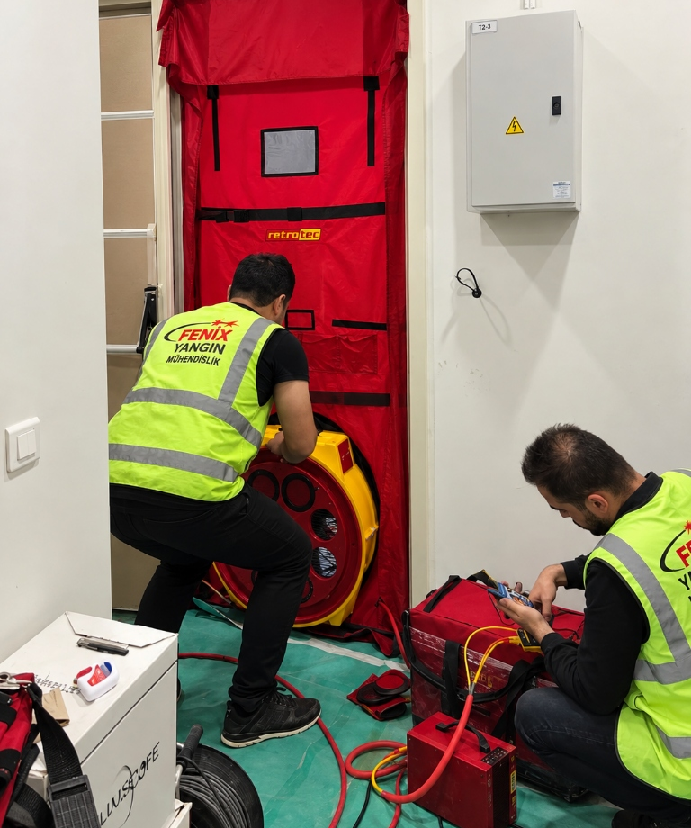
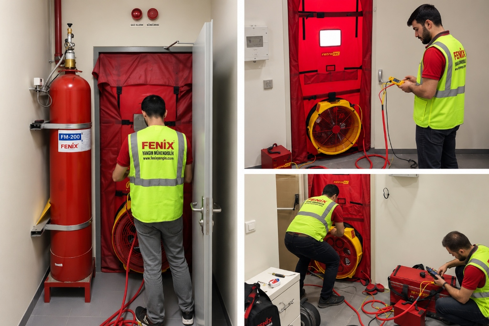
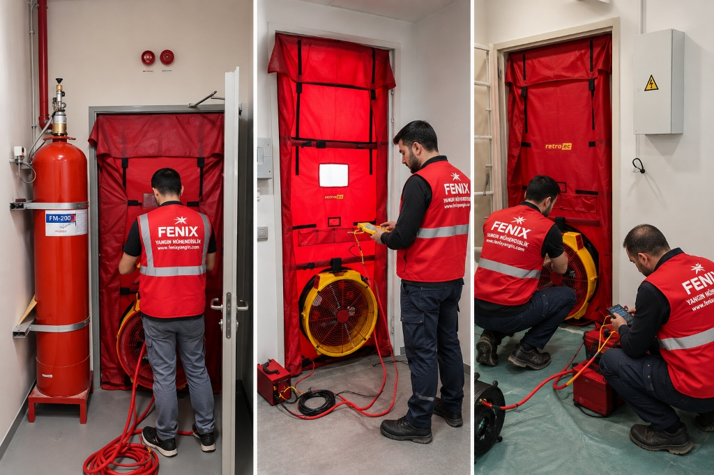

Oda Sızdırmazlık Testi
Gazlı söndürme sistemlerinin etkin şekilde çalışabilmesi için korunan hacmin gerekli söndürme konsantrasyonunu istenen süre boyunca koruyabilmesi gerekir.
Oda sızdırmazlık testi, gazlı söndürme uygulanan hacmin bu gerekliliği karşılayıp karşılamadığının, mahalin hava sızdırmazlığının ve NFPA 2001 ile ISO 14520 standartlarında tanımlanan 10 dakikalık minimum kalma süresinin değerlendirilmesine yönelik profesyonel bir testtir.

Oda Sızdırmazlık Testi Neden Önemlidir?
Gazlı söndürme sistemlerinin başarısı, uygulandıkları ortam içinde gerekli söndürme konsantrasyonuna, istenilen süre boyunca erişilmesine bağlıdır. Bunun anlamı; gazlı söndürme uygulanan hacmin sızdırmazlığı en az gerekli konsantrasyonu sağlayacak nitelikte olmalıdır.
Gaz boşaldıktan hemen sonra ortamdaki yangın sönmüş olabilir; fakat ortamda yeniden yanma meydana gelmemesi için gazın belirli bir süre boyunca mahalde kalması gerekir. Eğer odada kontrolsüz açıklıklar bulunursa, söndürücü gaz ortamdan erkenden uzaklaşır ve yangının yeniden başlama riski ortaya çıkar.
Bu deneme; bir hacimde açıklıkların bulunması, enerji tasarrufu ve bütünsellik gibi farklı amaçlarla da yapılsa da, özellikle temiz gazlı söndürme sistemlerinin başarısının garanti edilebilmesi için devreye alma öncesinde gerçekleştirilmesi gerekli bir denemedir.
10 Dakikalık Minimum Kalma Süresi
Temiz gazlı yangın söndürme sistemlerinde gazın korunan ortamda kalma süresi uluslararası standartlar tarafından net bir çerçeveye bağlanmıştır.
Temiz gazlar için NFPA 2001 ve ISO 14520 standartları tarafından belirlenen, gazın ortama boşaldıktan sonra oda içerisinde minimum kalma süresi 10 dakikadır. Bu standartlar, gazlı söndürme uygulanan hacmin sızdırmazlığının en az bu süreyi ve gerekli konsantrasyonu sağlayacak nitelikte olmasını öngörür.
Gaz boşaldıktan hemen sonra ortamdaki yangın sönmüş olabilir; fakat yeniden yanma olmaması için bu 10 dakikalık zaman tarif edilir. Korunan hacmin bu süre boyunca gazı tutabilmesi, yangının kontrol altına alınması ve mahalin güvenliği açısından hayati önem taşır.
Oda Sızdırmazlık Testi Ne Zaman Yapılmalıdır?
Kaynak standartlar ve gereklilikler doğrultusunda oda sızdırmazlık testinin gerçekleştirilmesi gereken iki temel durum bulunmaktadır:
Özellikle temiz gazlı söndürme sistemlerinin başarısının garanti edilebilmesi için devreye alma öncesinde gerçekleştirilmesi gerekli bir denemedir. Bu aşamada mahalde açıklıkların bulunması, bütünsellik ve enerji tasarrufu gibi unsurlar doğrulanır.
Eğer korunan mahalde tadilat yapıldı ise sızdırmazlık testi yinelenmelidir. Bunun anlamı; gazlı söndürme uygulanan hacmin sızdırmazlığının, yapılan tadilata rağmen en az gerekli konsantrasyonu sağlayacak nitelikte kalması gerektiğidir.

Sızdırmazlık ve Gazlı Söndürme Sistemi Performansı
Gazlı söndürme sistemlerinin başarısı, uygulandıkları ortam içinde gerekli söndürme konsantrasyonuna, istenilen süre boyunca erişilmesine bağlıdır.
Sistem ne kadar doğru kurulursa kurulsun, korunan hacmin sızdırmazlığı yeterli değilse söndürücü gaz gereken süreden önce tahliye olur. Bu nedenle oda sızdırmazlığı, gazlı yangın söndürme performansının temel güvencesidir.
Saha Uygulaması
Oda sızdırmazlık testi; gazlı söndürme uygulanan hacimde devreye alma öncesinde veya tadilat yapıldıktan sonra yerinde uygulanır. Bu çalışma; açıklıkların bulunması, enerji tasarrufu, bütünsellik ve sistem başarısının garanti edilmesi amacıyla gerçekleştirilir:
Korunan hacmin fiziksel sınırları, açıklıkları ve bütünselliği sahada incelenir.
Mahalin kapı açıklığına test bezi ve fan düzeneği monte edilerek ölçüme hazırlanır.
Mahalin hava sızdırmazlığı ve açıklıkları kontrollü simülasyonla test edilir.
Mahalin 10 dakika kalma süresini ve gerekli konsantrasyonu sağlama niteliği değerlendirilir.

Sızdırmazlık Test Değerlendirmesi
Korunan mahalin 10 dakikalık gaz kalma süresi yeterliliğini ve hacim sızdırmazlığını sahada değerlendirmek için Fenix Yangın mühendislik ekibinden randevu alabilirsiniz.
Test Randevusu AlınSık Sorulan Sorular
Oda sızdırmazlık testi, standartlar ve uygulama gereklilikleri hakkında merak edilen temel sorular.
Gazlı söndürme sistemlerinin başarısı, uygulandıkları ortam içinde gerekli söndürme konsantrasyonuna istenilen süre boyunca erişilmesine bağlıdır. Oda sızdırmazlık testi, gazlı söndürme uygulanan hacmin sızdırmazlığının en az gerekli konsantrasyonu sağlayacak nitelikte olup olmadığını değerlendirmek, açıklıkları tespit etmek ve sistemin yangın anındaki başarısını garanti altına almak amacıyla yapılır.
Temiz gazlar için NFPA 2001 ve ISO 14520 standartları tarafından belirlenen minimum kalma süresi 10 dakikadır. Gaz ortama boşaldıktan hemen sonra ortamdaki yangın sönmüş olabilir; fakat ortamda yeniden yanma meydana gelmemesi için gazın bu 10 dakika boyunca odada kalması gerekir.
Oda sızdırmazlık testi, özellikle temiz gazlı söndürme sistemlerinin başarısının garanti edilebilmesi için sistemin devreye alma aşaması öncesinde gerçekleştirilmelidir.
Evet. Korunan mahalde herhangi bir tadilat yapıldı ise sızdırmazlık testi mutlaka yinelenmelidir. Çünkü gazlı söndürme uygulanan hacmin sızdırmazlığı en az gerekli söndürme konsantrasyonunu sağlayacak nitelikte kalmalıdır.
Gazlı söndürme uygulanan hacmin sızdırmazlığı en az gerekli konsantrasyonu sağlayacak nitelikte olmalıdır. Odada kontrolsüz açıklıklar bulunması gazın erken dağılmasına yol açar ve sistemin yangını söndürme kabiliyetini engelleyebilir.
İlgili Hizmetler
Fenix Yangın bünyesinde gazlı söndürme sistemleri için sunduğumuz diğer mühendislik çözümleri.
FM200, Novec 1230 ve CO₂ gazlı söndürme sistemlerinin anahtar teslim kurulumu.
Sistemleri İncele →Silindir basınçları, vanalar ve dedektör hatlarının düzenli periyodik kontrolü.
Bakım Detayları →Boşalan veya basıncı düşen FM200 silindirlerinin sertifikalı dolumu ve testleri.
Dolum Hizmeti →Tesisinizin oda sızdırmazlık testi ve gaz tutma gereksinimleri için bize ulaşın.
Bize Ulaşın →Tesisiniz İçin Oda Sızdırmazlık Testini Planlayın
Gazlı söndürme sisteminizin etkinliğini ve korunan hacmin 10 dakikalık kalma süresi yeterliliğini doğrulamak için uzman mühendislik kadromuzla iletişime geçin.